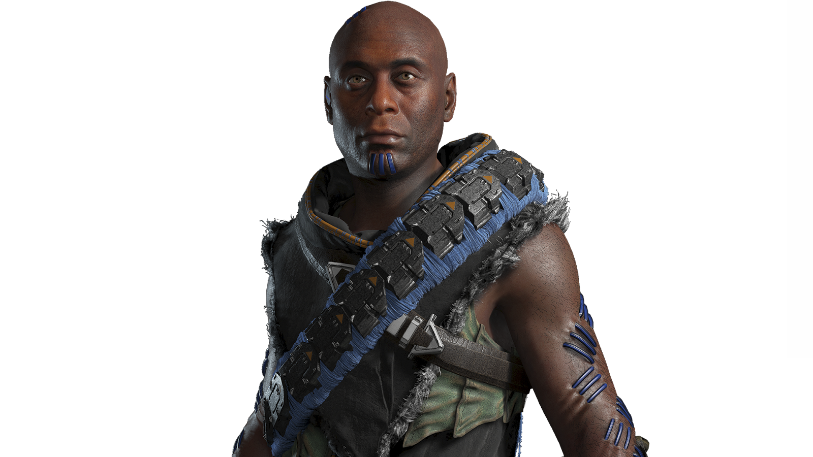
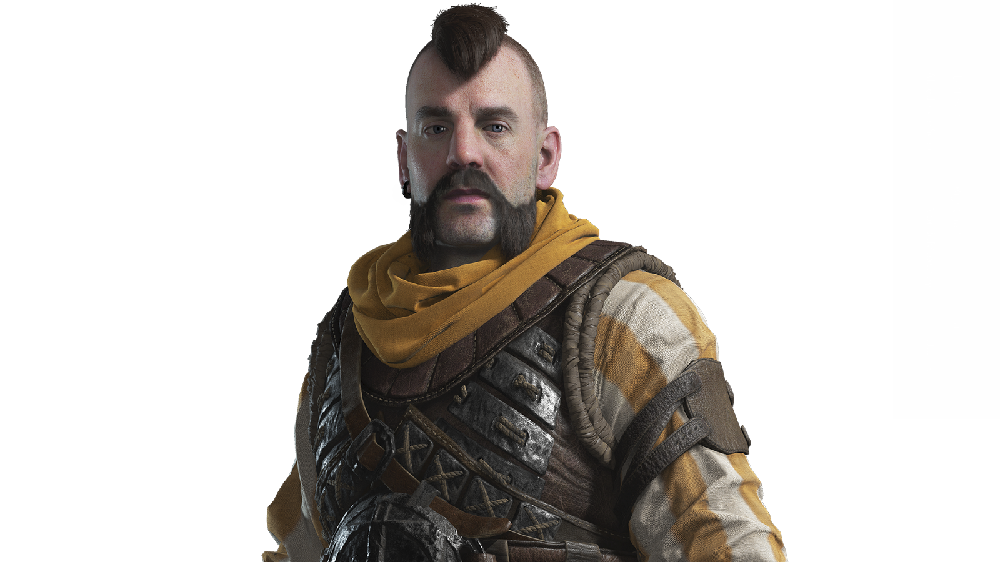
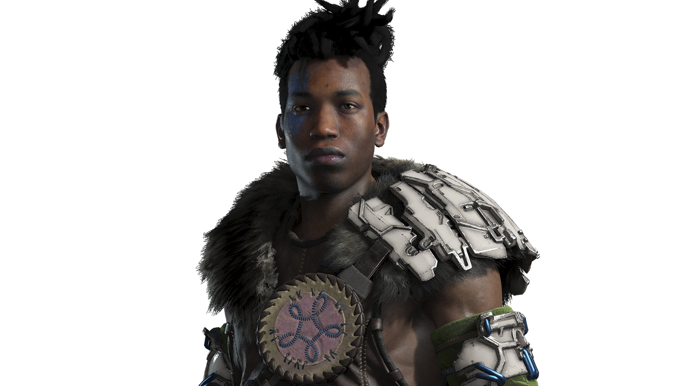
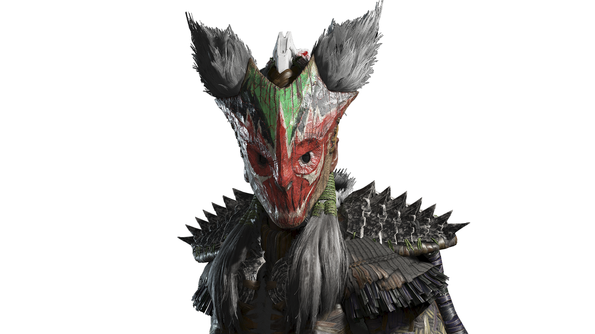
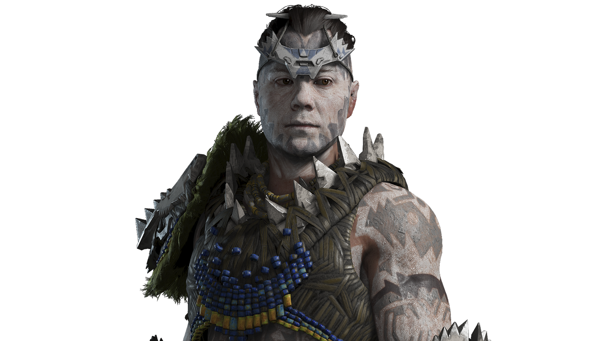
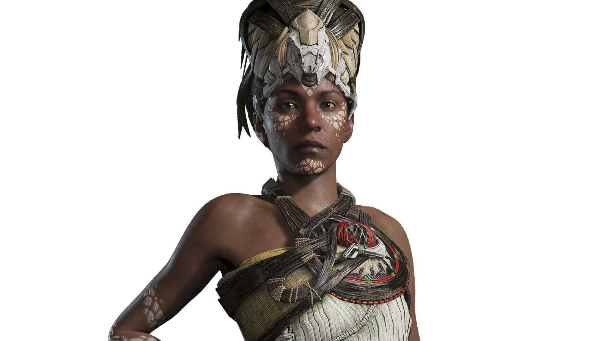
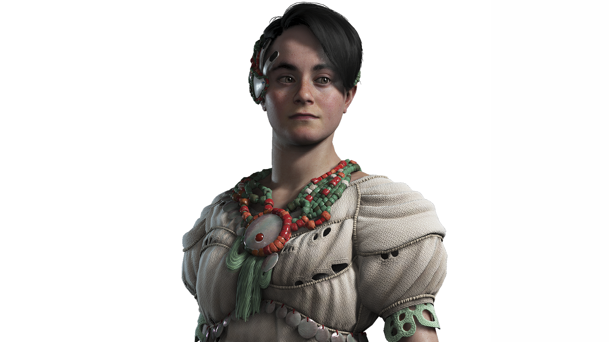
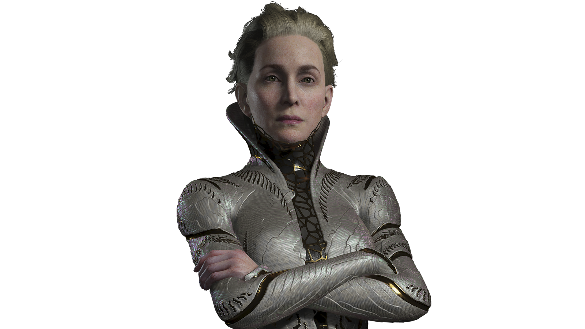
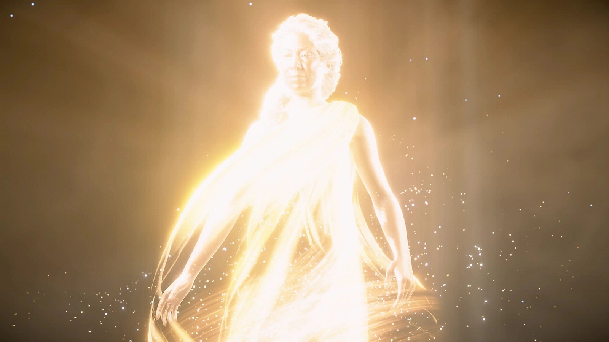

Personagens principais

Aloy
Aloy é a melhor caçadora de máquinas no mundo de Horizon. Forte, independente, astuta e bondosa, ela era apenas uma exilada sem-mãe e se tornou a defensora da humanidade. Além de tudo isso, ela tem uma determinação incomparável para revelar os mistérios do Oeste Proibido, frear a peste e salvar o planeta.
Sylens
Pouco se sabe sobre Sylens. Um erudito, sábio e guerreiro errante, o passado dele se resume a uma série de susurros, caminhos sinuosos e enigmas, tudo encorajado por ele próprio. Contanto que possa permanecer invisível nas sombras, ele poderá seguir sua obsessão: aprender tudo o que sobre as origens dos homens e das máquinas.
Erend
Erend é um dos fiés companheiros da Aloy. Ele é Capitão da Vanguarda, um grupo da elite dos guerreiros Oseram. Ele é valente, engraçado e, às vezes, modesto até demais. No entento, por trás desse exterior robusto, há um bom coração e uma alma vunerável que a Aloy quer proteger.
Varl
Um guerreiro da tribo Nora, Varl é um dos antigos companheiros da Aloy que retorna em Horizon Forbiden West. Devido aos eventos finais de Horizon Zero Dawn, ele, assim como muitos de sua tribo, consideram Aloy a Ungida, uma figura religiosa na crença Nora que ele tem o dever de ajudar. Gentil e dedicado, ele se preocupa com o bem-estar da Aloy e com o peso do fardo que ela carrega.
Regalla
Regalla é a destemida e inexorável líder da facção de guerreiros Tenakth rebeldes. De alguma forma, o exército dela ganhou a habilidade de domar e montar máquinas, tornando-a uma maeaça a todas as tribos no Oeste Proibido e além.
Kotallo
Kotallo é um guerreiro estoico e imponente, criado pelo Clã do Céu da tribo Tenakth. Embora seja um jovem soldado, ele se tornou Delegado, um legislador itinerante que mantém a paz instituída pelo líder da tribo, Hekarro.
Zo
Zo é nativa da tribo agrícola Utaru. Ela se dedicou a prestar cuidados e conforto ao seu povo no papel de Acalentora, alguém que ajuda os enfermos a fazerem uma transição serena da vida para a morte.
Alva
Alva é membro de uma nova e misteriosa tribo que Aloy encontra no Oeste Proibido. Curiosa e brilhante, porém insegura, ela tem o dever de ajudar seu povo a interpretar o passado distante.
Tilda
Tilda é uma nova personagem misteriosa com uma conexão especial ao passado longínquo. Tudo à volta dela está envolto em enigmas e segredos, e Aloy precisará de toda a sua intelingência e astúcia para desvendá-los.
Gaia
GAIA é a inteligência administradora central do sistema de terraformação Zero Dawn, responsável por trazer vida de volta à Terra após sua destruição mil anos atrás. Em Horizon Zero Dawn, é revelado que ela se sacrificou para impedir o avanço de HADES e que a criação da Aloy fazia parte do seu plano. Ela está de volta em Horizon Forbiden West para ajudar Aloy e erradicar a peste e salvar a humanidade.
Fonte: Playstation